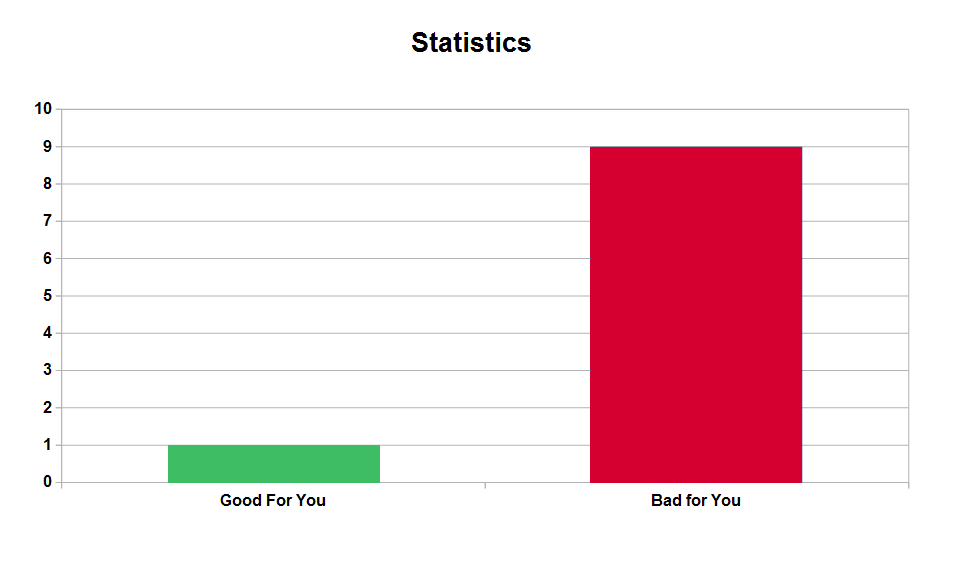
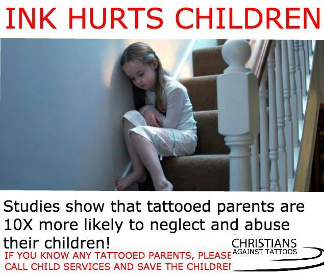
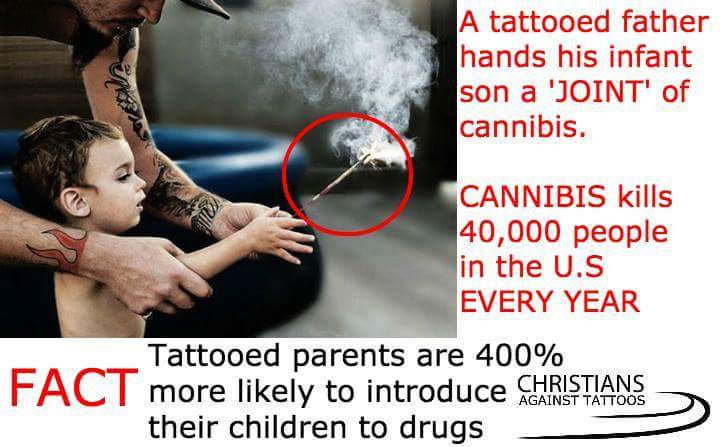

9 out of 10 Statistics Are Bad for You
The Average Human
Has One Testicle
Motorcycle Helmets are Deadly?
| Registration | Reported Accidents | Fatalties | |
|---|---|---|---|
| States with Mandatory Helmet Use | 2,352,293 | 52,270 | 1,557 |
| States with Voluntary Helmet Use | 1,497,923 | 29,062 | 844 |
Correlation
≠
Causation
Truncated y axis


Sub-sampling of x values to manipulate trends


When all else fails:
Make it up...


Source: Christians Against Tattoos